가스산업기사 (2003-03-16 기출문제)
1과목: 연소공학
1. 산화에틸렌을 장시간 저장하지 못하게 하는 이유는 무엇 때문인가?
- 분해폭발
- 분진폭발
- 산화폭발
- 중합폭발
(정답률: 74%)

2. 다음중 가연물의 조건으로서 가치가 없는 것은?
- 발열량이 큰 것
- 열전도율이 큰 것
- 활성화에너지가 작은 것
- 산소와의 친화력이 큰 것
(정답률: 58%)
3. 다음 중 분해에 의한 가스폭발은 어느 것인가?
- 수소와 염소 가스의 혼합물에 일광직사
- 110℃ 이상의 아세틸렌 가스폭발
- 프로판 가스의 점화 폭발
- 용기의 불량 및 압력과다
(정답률: 78%)
4. 전 폐쇄 구조로 용기내부에서 폭발성 가스의 폭발이 일어났을 때 용기가 압력에 견디고 외부의 폭발성 가스에 인화할 우려가 없도록한 방폭구조는 ?
- 내압방폭구조
- 안정증 방폭구조
- 특수 방폭구조
- 유입 방폭구조
(정답률: 93%)
5. 1 ㎏의 공기를 20℃, 1㎏/㎝2인 상태에서 일정 압력으로 가열 팽창시켜서 부피를 처음의 5배로 하려고 한다. 이때 필요한 온도 상승은 몇 ℃ 인가?
- 1172℃
- 1282℃
- 1465℃
- 1561℃
(정답률: 65%)
6. 다음 설명 중 맞는 것은 ?
- 폭굉속도는 보통 연소속도의 10배 정도이다.
- 폭발범위는 온도가 높아지면 일반적으로 넓어진다.
- 폭굉(Detonation)속도는 가스인 경우 1000m/sec이하이다.
- 가연성 가스와 공기의 혼합가스에 질소를 첨가하면 폭발 범위의 상한치는 크게 된다.
(정답률: 88%)
7. 과열 증기의 온도와 포화 증기의 온도차를 무엇이라고 하는가?
- 과열도
- 포화도
- 비습도
- 건조도
(정답률: 83%)
8. 일반적으로 온도가 10℃ 상승하면 반응속도는 약 2배 빨라진다. 40℃의 반응온도를 100℃로 상승시키면 반응속도는 몇 배 빨라지는가?
- 26
- 25
- 24
- 23
(정답률: 84%)
9. 아래의 반응식은 메탄의 완전연소반응이다. 이 때 메탄, 이산화탄소, 물의 생성열이 각각 -17.9kcal, -94.1kcal, -57.8kcal 이라면 메탄의 완전연소시 발열량은 얼마인가?
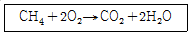
- 216.5kcal
- 191.8kcal
- 169.8kcal
- 134.0kcal
(정답률: 58%)
10. 다음 중 이론연소온도(화염온도)t℃를 구하는 식은 ? (단, Hh,HL : 고,저 발열량, G : 연소가스, Cp : 비열)
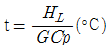
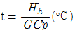
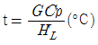
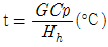
(정답률: 72%)
11. 다음 중 잘못된 것은?
- 고압일수록 폭발범위가 넓어진다.
- 압력이 높아지면 발화온도는 낮아진다.
- 가스의 온도가 높아지면 폭발범위는 좁아진다.
- 일산화탄소는 공기와 혼합시 고압이 되면 폭발범위가 좁아진다.
(정답률: 81%)
12. 다음은 폭발의 위험성을 갖는 물질들이다. 이 중 폭발의 종류가 중합열에 의한 폭발물질에 해당되는 것은?
- 염소산칼륨
- 과산화물
- 부타디엔
- 아세틸렌
(정답률: 74%)
13. 질소와 산소를 같은 질량으로 혼합 했을때 평균 분자량은 얼마인가 ?(단, 질소와 산소의 분자량은 각각 28, 32 이다.)
- 30.00
- 29.87
- 28.84
- 26.47
(정답률: 75%)
14. 화염의 온도를 높이려 할 때 해당되지 않는 조작은?
- 공기를 예열하여 사용한다.
- 연료를 완전연소 시키도록 한다.
- 발열량이 높은 연료를 사용한다.
- 과잉공기를 사용한다.
(정답률: 82%)
15. 위험 등급의 분류에서 특정 결함의 위험도가 가장 큰 것은?
- 안전(安全)
- 한계성(限界性)
- 위험(危險)
- 파탄(破綻)
(정답률: 79%)
16. 다음 보기중 가연성가스 중 폭발범위가 가장 큰 것과 가장 작은 것으로 묶어진 것은 ?
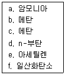
- a.e
- a.f
- b.c
- e.d
(정답률: 79%)
17. 아래 보기항의 설명 중 틀린 것은?
- 가스 폭발 범위는 측정 조건을 바꾸면 변화한다.
- 점화원의 에너지가 약할수록 폭굉유도거리는 길다.
- 혼합가스의 폭발한계는 르샤트리에 식으로 계산한다.
- 가스 연료의 점화에너지는 가스농도에 관계없이 결정된 값이다.
(정답률: 77%)
18. 다음은 연소를 위한 최소 산소량(Minimum oxygen for combustion,MOC)에 관한 사항이다. 옳은 것은?
- 가연성 가스의 종류가 같으면 함께 존재하는 불연성 가스의 종류에 따라 MOC 값이 다르다.
- MOC를 추산하는 방법 중에는 가연성 물질의 연소상한계값(H)에 가연물 1몰이 완전 연소할 때 필요한 과잉 산소의 양론 계수값을 곱하여 얻는 방법도 있다.
- 계 내에 산소가 MOC 이상으로 존재하도록 하기 위한 방법으로 불활성 기체를 주입하여 계의 압력을 상승시키는 방법이 있다.
- 가연성 물질의 종류가 같으면 MOC 값도 다르다.
(정답률: 71%)
19. 프로판 가스를 10kg/h 사용하는 보일러의 이론 공기량은 매 시간당 몇 m3필요한가?
- 111.4 Nm3/h
- 121.2 Nm3/h
- 131.5 Nm3/h
- 141.4 Nm3/h
(정답률: 52%)
20. 완전가스에 대한 설명으로 틀린 것은?
- 완전가스는 분자 상호간의 인력을 무시한다.
- 완전가스에 가까운 실제기체로는 H2, He등이 있다.
- 완전가스는 분자 자신이 차지하는 부피를 무시한다.
- 완전가스는 저온, 고압에서 보일-샤를의 법칙이 성립한다.
(정답률: 74%)
2과목: 가스설비
21. 가단주철제 관 이음쇠의 종류가 아닌 것은?
- 소켓트
- 니플
- 티
- 가스켓
(정답률: 81%)
22. 금속재료에 대한 설명으로 옳지 않은 것은?
- 강에 인(P)의 함유량이 많으면 신율, 충격치는 저하된다.
- 크롬 17-20(%), 니켈7-10(%) 함유한 강을 18-8 스테인레스강이라 한다.
- 동과 주석의 합금은 황동이고 동과 아연의 합금은 청동이다.
- 금속가공 중에 생긴 잔류응력을 제거하기 위해 열처리한다.
(정답률: 63%)
23. 가스의 성질에 대한 설명으로 옳은 것은?
- 질소는 안정된 가스로 불활성 가스라고도 불리우고 고온에서도 금속과 화합하지 못한다.
- 염소는 반응성이 강한 가스이며 강에 대해서 상온의 건조 상태에서도 현저한 부식성이 있다.
- 암모니아는 산이나 할로겐과도 잘 화합한다.
- 산소는 액체 공기를 분류하여 제조하는 반응성이 강한 가스이며, 그 자신도 연소된다.
(정답률: 49%)
24. 다중 원심펌프의 일반적인 성능 곡선은?
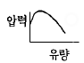
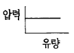
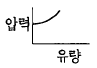
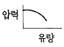
(정답률: 48%)
25. 도시가스 배관에 대한 설명으로 옳지 않은 것은?
- 폭 8m 이상의 도로에는 1.2m 이상으로 묻는다.
- 배관 접합은 원칙적으로 용접에 의한다.
- 지하매설 배관 재료는 주철관으로 한다.
- 지상배관의 표면 색상은 황색으로 한다.
(정답률: 63%)
26. 가장 높은 진공을 얻을 수 있는 펌프는?
- 분사펌프
- 피스톤펌프
- 기름회전펌프
- 3단 티임이젝터
(정답률: 41%)
27. 최고사용압력이 고압 또는 중압인 가스홀더에 대한 설명으로 옳지 않은 것은?
- 응축액을 외부로 뽑을 수 있는 장치를 설치 할 것
- 압송기 배송기에는 냉각수의 흐름을 확인할 수 있는 장치를 설치 할 것
- 관의 입구 및 출구에는 온도압력의 변화에 의한 신축을 흡수한 조치를 할 것
- 응축액의 동결을 방지하는 조치를 할 것
(정답률: 50%)
28. 가연성 고압가스 저장탱크 외부에는 은백색도료를 바르고 주위에서 보기 쉽도록 가스의 명칭을 표시하여야 한다. 가스명칭 표시의 색상은?
- 검은글씨
- 초록글씨
- 붉은글씨
- 노란글씨
(정답률: 84%)
29. LPG용 1단감압식 저압조정기의 조정압력범위를 옳게 나타낸 것은?
- 230mm H2O ∼ 330mm H2O
- 500mm H2O ∼ 3,000mm H2O
- 230mm H2O ∼ 840mm H2O
- 500mm H2O ∼ 1,000mm H2O
(정답률: 63%)
30. 조정압력이 3.3 KPa 이하인 조정기의 안전장치의 작동 정지 압력은?
- 2.8 - 5.0 KPa
- 7KPa
- 5.04 - 8.4 KPa
- 5.6 - 10.00KPa
(정답률: 79%)
31. 내용적 50ℓ 의 용기에 120 kg/cm2 의 압력으로 충전되어 있는 가스를 같은 온도에서 40ℓ 의 용기에 채우면 압력(kg/cm2)은?
- 96 kg/cm2
- 144 kg/cm2
- 150 kg/cm2
- 180 kg/cm2
(정답률: 50%)
32. 가연성 가스압축기를 정지시키려 할 때 작업 안전상 그 조작 순서가 바르게 나열된 것은?
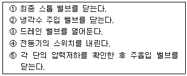
- ④-⑤-①-③-②
- ①-④-③-⑤-②
- ①-③-④-⑤-②
- ④-①-③-⑤-②
(정답률: 44%)
33. 배관 설치 시 방식대책으로 옳지 않은 것은?
- 철근콘크리트 벽을 관통할 때는 슬리브 등을 설치한다
- 점토질 토양에서는 배관이 접촉되도록 한다.
- 철근콘크리트 주변의 배관에는 전기적 절연 이음쇠를 사용한다.
- 매설관에서 지반면상으로 올라오는 관의 지중부분에는 방식조치를 하여야 한다.
(정답률: 68%)
34. 프로판 용기에 V:47, TP:31 로 각인이 되어 있다. 프로판의 충전상수가 2.35 일 때 충전량(kg)은?
- 10 kg
- 15kg
- 20kg
- 50kg
(정답률: 76%)
35. 역화방지 장치를 설치할 장소로 옳지 않은 곳은?
- 가연성가스를 압축하는 압축기와 오토크레이브사이
- 아세틸렌 충전용지관
- 가연성기체를 압축하는 압축기와 저장탱크사이
- 아세틸렌의 고압건조기와 충전용교체밸브사이
(정답률: 67%)
36. 과열과 과냉이 없는 증기압축 냉동사이클에서 응축온도가 일정할 때 증발온도가 높을수록 성적계수는?
- 감소
- 증가
- 불변
- 감소와 증가를 반복
(정답률: 60%)
37. 다음 그림의 냉동장치와 일치하는 행정 위치를 표시한 TS선도는?
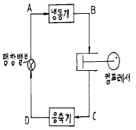
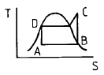
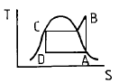
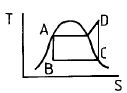
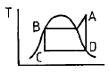
(정답률: 69%)
38. Fisher식 정압기에 2차측 설정압력 이상 저하현상이 일어날 경우의 원인이 아닌 것은?
- 정압기의 능력부족
- 저압 보조장치의 개폐불량
- 필터에 먼지부착
- 주 다이어그램의 파손
(정답률: 27%)
39. 직경 100mm, 행정 150mm, 회전수 600rpm, 체적효율이 0.8인 2기용 왕복압축기의 송출량(m3/min)은?
- 0.565 m3/min
- 0.842 m3/min
- 1.131 m3/min
- 1.540 m3/min
(정답률: 68%)
40. 산소가스를 취급하는 장치의 주의할 점으로 옳지 않은 것은?
- 고압배관에 철을 사용하지 않는다.
- 윤활유를 사용하지 않는다.
- 아세틸렌이 혼입되지 않도록 한다.
- 구리합금을 사용할 수 없다.
(정답률: 34%)
3과목: 가스안전관리
41. 정압기를 선정할 때 고려해야 할 특성이 아닌 것은?
- 정특성
- 동특성
- 유량특성
- 공급압력 자동승압특성
(정답률: 76%)
42. 공기 액화 분리 장치에서 산소를 압축하는 왕복동 압축기의 분출량이 6000kg/h 이고,27℃ 에서 안전변의 작동압력이 80kg/cm2 일 때 안전 밸브의 유효 분출면적은?
- 0.099cm2
- 0.76cm2
- 0.99cm2
- 1.19cm2
(정답률: 52%)
43. 공기 액화분리기(1시간의 공기압축량 1000 m3 이하제외)에 설치된 액화산소탱크내의 액화산소의 분석 주기는?
- 1일 1회 이상
- 주 1회 이상
- 주 2회 이상
- 월 1회 이상
(정답률: 82%)
44. 시안화수소의 충전 시 주의사항으로 옳은 것은?
- 용기에 충전하는 시안화수소는 순도가 99.9% 이상이어야 한다.
- 용기에 충전하는 시안화수소의 안정제로 아황산가스 또는 염산 등의 안정제를 첨가한다.
- 시안화수소를 충전하는 용기는 충전후 12 시간 정치하여야 한다.
- 시안화수소를 충전한 용기는 1일 1회 이상 질산구리벤젠 등의 시험지로 가스누출 검사를 실시한다.
(정답률: 82%)
45. 초저온 저장탱크의 내용적이 20,000ℓ 일 때 충전할 수 있는 액체 산소량은? (단, 액체산소의 비중은 1.14kg/ℓ 이다)
- 18,000kg
- 16,350kg
- 22,800kg
- 20,520kg
(정답률: 66%)
46. 용기 보관실을 설치한 후 액화석유가스를 사용하여야 하는 시설은?
- 저장능력 500㎏ 이상
- 저장능력 300㎏ 이상
- 저장능력 2500㎏ 이상
- 저장능력 100㎏ 이상
(정답률: 77%)
47. 독성가스 외의 고압가스 용기에 의한 운반기준으로 옳지 않은 것은?
- 차량의 앞뒤에 "위험고압가스"라는 경계표시를 한다.
- 밸브가 돌출한 충전용기는 고정식 프로텍터 또는 캡을 부착 시킨다.
- 충전용기를 운반하는 때에는 넘어짐 등으로 인한 충격을 방지하기 위하여 충전용기를 단단하게 묶는다
- 운반중의 충전용기는 항상 45℃ 이하를 유지한다.
(정답률: 80%)
48. 저장능력 18,000m3 인 산소 저장시설은 시장, 극장, 그 밖에 이와 유사한 시설로서 수용능력이 300인 이상인 건축물에 대해 몇 m의 안전거리를 두어야 하는가?
- 12m
- 14m
- 17m
- 18m
(정답률: 71%)
49. 고압가스안전관리법에 의한 가스저장탱크 설치 시 내진설계를 해야 하는 것은?(단, 비가연성 및 비독성인 경우은 제외)
- 저장능력이 5톤 이상 또는 500m3 이상인 저장탱크
- 저장능력이 3톤 이상 또는 300m3 이상인 저장탱크
- 저장능력이 2톤 이상 또는 200m3 이상인 저장탱크
- 저장능력이 1톤 이상 또는 100m3 이상인 저장탱크
(정답률: 69%)
50. 도시가스 배관의 굴착으로 20m 이상 노출된 배관에 대하여는 누출된 가스가 체류하기 쉬운 장소에 가스노출경보기를 설치하는데, 설치 간격은?
- 5m
- 10m
- 15m
- 20m
(정답률: 56%)
51. 독성인 액화가스 저장탱크 주위에는 합산 저장 능력이 몇 톤 이상일 경우 방류둑을 설치하여야 하는가?
- 2 톤
- 3 톤
- 5 톤
- 10 톤
(정답률: 80%)
52. 고압가스 충전용기의 운반기준 중 동일차량에 적재운반 할 수 있는 것은?
- 가연성 가스와 산소
- 염소와 수소
- 아세틸렌과 염소
- 암모니아와 염소
(정답률: 60%)
53. 특정설비에 대한 표시 중 기화장치에 각인 또는 표시해야 할 사항이 아닌 것은?
- 사용하는 가스의 명칭
- 내압시험압력
- 가열방식 및 형식
- 설비별 기호 및 번호
(정답률: 52%)
54. 자동차에 고정된 탱크로 납붙임 또는 접합용기에 액화석유가스를 충전하는 때의 가스 압력은 35℃에서 얼마(MPa) 미만 이어야 하는가?
- 0.5
- 0.3
- 0.2
- 0.1
(정답률: 37%)
55. 액화석유가스 특정사용자의 안전관리에 관계되는 업무를 행하는 자는 안전교육을 받아야 하는데, 정기교육 기간으로 옳은 것은?
- 안전관리자 선임후 매 2년마다
- 안전관리자 선임후 매 1년마다
- 신규종사후 6월 이내
- 신규종사후 1년 이내
(정답률: 67%)
56. 상온 상압의 공기 중 수소의 폭발범위는?
- 12.5 - 74.0 ％
- 4.0 - 75.0 ％
- 2.7 - 36.0 ％
- 2.1 - 9.5 ％
(정답률: 83%)
57. 아세틸렌을 용기에 충전할 때에는 미리 용기에 다공질물을 고루 채워야 하는데 이때 다공질물의 다공도는?
- 62％이상, 95%미만
- 70％이상,92%미만
- 75％이상, 92%미만
- 80％이상,95%미만
(정답률: 92%)
58. 액화석유가스 충전시설에 대한 기준으로 지상에 설치된 저장탱크와 가스충전 장소와의 사이에 설치하여야 하는 것은?
- 역화방지기
- 방호벽
- 드레인 세퍼레이터
- 정제장치
(정답률: 86%)
59. 용기부속품에 대한 표시 기호로서 옳지 않은 것은?
- 아세틸렌가스를 충전하는 용기의 부속품 : AG
- 압축가스를 충전하는 용기의 부속품 : HG
- 초저온용기 및 저온용기의 부속품 : LT
- 액화석유가스를 충전하는 용기의 부속품 : LPG
(정답률: 78%)
60. 독성가스의 제해설비 중 충전설비에 적합한 기준이 아닌것은?
- 누출된 가스의 확산을 적절히 방지할 것
- 독성가스의 흡입설비는 적절할 것
- 방독마스크 및 보호구는 항상 사용할 수 있는 상태로 유지할 것
- 누출된 가스가 체류하지 않도록 강제통풍 시설을 할 것
(정답률: 61%)
4과목: 가스계측
61. 염화 제1구리 착염지로 아세틸렌 가스를 검지할 때 착염지의 변색은?
- 흑색
- 청색
- 적색
- 백색
(정답률: 73%)
62. 가정용 가스미터에 1000 mmH2O 라고 기재되어 있는 경우가 있다. 이것이 의미하는 것은?
- 기밀시험
- 압력손실
- 최대유량
- 최저압력
(정답률: 56%)
63. 크로마토그래피의 피이크가 다음 그림과 같이 기록되었을 때 피이크의 넓이(A)를 계산하는 식으로 가장 적합한 것은?
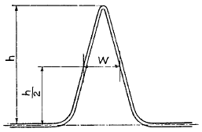
- Wh
- 1/2Wh
- 2Wh
- 1/4Wh
(정답률: 64%)
64. 가연성 가스 검출기의 종류가 아닌 것은?
- 안전등형
- 간섭계형
- 광조사형
- 열선형
(정답률: 68%)
65. 상대습도를 나타내지 않는 습도계는?
- 모발 습도계
- 전기식 습도계
- 건· 습구 습도계
- 전기저항식 습도계
(정답률: 32%)
66. 마노미터(Manometer)에서 물 32.5mm 와 어떤 액체 50mm가 평형을 이루었을 때 이 액체의 비중은?
- 0.65
- 1.52
- 2.0
- 0.8
(정답률: 39%)
67. 계측기의 특성에 대한 설명으로 옳지 않은 것은?
- 계측기의 정오차로는 계통오차와 우연오차가 있다.
- 측정기가 감지하여 얻은 최소의 변화량을 감도라고 한다.
- 계측기의 입력신호가 정상상태에서 다른 정상상태로 변화하는 응답은 과도응답이다.
- 입력신호가 어떤 일정한 값에서 다른 일정한 값으로 갑자기 변화하는 것은 임펄스응답이다.
(정답률: 39%)
68. 오르자트 가스분석계로 가스분석 시 적당한 온도는?
- 10-15℃
- 15-25℃
- 16-20℃
- 20-28℃
(정답률: 69%)
69. 가스미터의 종류 중 추량식 가스미터가 아닌 것은?
- 막식형
- 오리피스
- turbine형
- 벤튜리형
(정답률: 49%)
70. 측정방법 중 간접 측정에 해당하는 것은?
- 저울로 물체의 무게를 측정
- 시간과 부피로서 유량을 측정
- 블록 게이지로서 작은 길이를 측정
- 천평과 분동으로서 질량을 측정
(정답률: 60%)
71. 1 기압에 해당되지 않은 것은?
- 1.013 bar
- 1013 dyne/cm2
- 1 torr
- 29.9 inHg
(정답률: 66%)
72. 차압식 유량계에서 압력차가 처음보다 2 배 커지고 관의 지름이 1/2 배로 되었다면, 나중 유량 ( Q2)과 처음 유량( Q1)과의 관계로 옳은 것은? (단, 나머지 조건은 모두 동일하다.)(문제 오류로 복원중입니다. 정확한 보기내용을 아시는분께서는 오류신고를 통하여 내용 작성 부탁드립니다. 정답은 3번입니다.)
- Q2= 1.412 Q1
- Q2= 0.707 Q1
- Q2= 0.3535 Q1
- 1 Q2= 복원중 Q1
(정답률: 61%)
73. 비중이 0.9 인 액체 개방탱크에 탱크 하부로 부터 2 m위치에 압력계를 설치했더니 지침이 1.5kg/cm2 을 가르켰다. 이 때의 액위는?
- 14.7m
- 147cm
- 17.4m
- 174cm
(정답률: 43%)
74. 일반적으로 계측기는 3 부분으로 구성 되어 있다 이에 속하지 않는 것은?
- 검출부
- 전달부
- 수신부
- 제어부
(정답률: 46%)
75. 막식가스미터에서 크랭크 축이 녹슬거나 밸브와 밸브시트가 타르나 수분 등에 의해 점착 또는 고착되어 일어나는 현상은?
- 부동
- 기어불량
- 떨림
- 불통
(정답률: 57%)
76. 기체의 측정에 사용하는 가스미터의 설명과 관계없는 것은?
- 내용적이 일정한 드럼의 회전수에 의해 통과유량을 체적으로 구하는 형식이다.
- 습식가스미터는 건식가스미터에 비해 정도(감도)가 좋고 대용량에 사용 한다.
- 건식가스미터는 습식가스미터에 비해 물을 사용하지 않으므로 정도(감도)가 나쁘다.
- 막식가스미터는 가정용 가스미터로 많이 사용 한다.
(정답률: 47%)
77. 오리피스, 노즐, 벤튜리 유량계의 공통점은?
- 직접계량
- 초음속 유체만의 유량측정
- 압력강하측정
- 가격이 싸며 설계가 간편
(정답률: 73%)
78. 압력계는 측정방법에 따라 1, 2차 압력계로 구분하는데, 1차 압력계는?
- 다이어프램 압력계
- 벨로우즈 압력계
- 마노미터
- 부르돈관 압력계
(정답률: 45%)
79. 부식성 유체의 압력을 측정하는 데 적절한 압력계는?
- 다이어프램형 압력계
- 전기저항식 압력계
- 부유 피스톤식 압력계
- 피에조 전기 압력계
(정답률: 60%)
80. 가스미터 중 로우터 미터의 용량범위는?
- 1.5 - 200 m3/h
- 0.2 - 3000 m3h
- 10 - 2000 m3/h
- 100 - 5000 m3/h
(정답률: 53%)